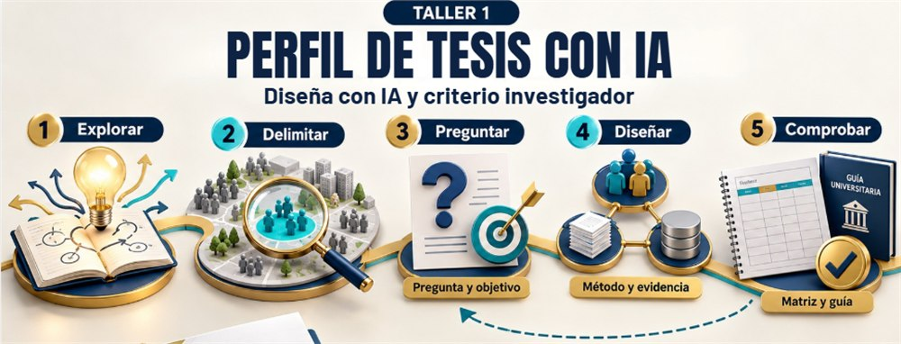

Así se realiza la clase · Muestra en video (20 seg):
Taller 1 · 15 de noviembre · 7:00 p. m.
Perfil de tesis con IA
Diseña con IA y criterio investigador
Ruta de trabajo en 5 pasos:
-
1
Explorar: Identificar la idea inicial y reconocer un problema investigable.
-
2
Delimitar: Precisar población, contexto, temporalidad y viabilidad real.
-
3
Preguntar: Formular la pregunta de investigación y alinear los objetivos.
-
4
Diseñar: Definir método, evidencia, operacionalización o categorización.
-
5
Comprobar: Validar consistencia interna y correspondencia con la guía universitaria.
Producto demostrativo
Verás cómo se construye y revisa una propuesta de matriz y perfil mediante un caso didáctico.